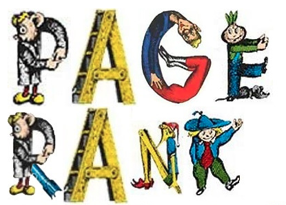
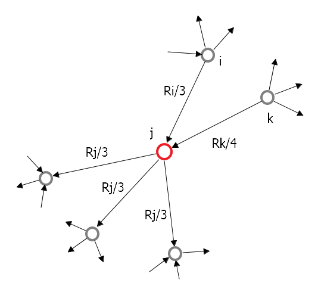
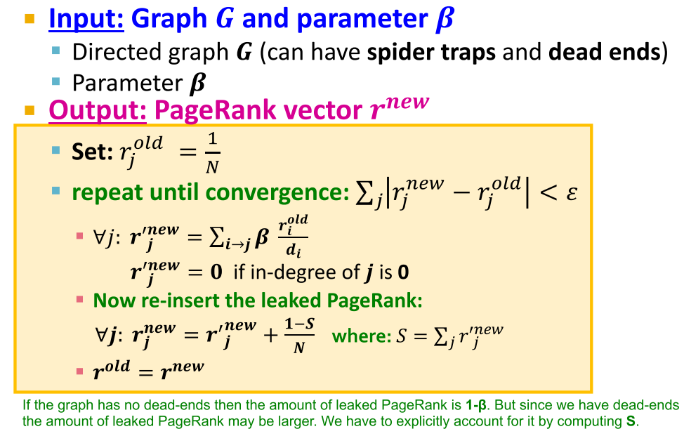

В данной статье я разберу принцип работы алгоритма Page Rank, который был предложен Лари Пейдж и Сергеем Брином для ранжирования веб-страниц для поискового сервиса Google.
Фундаментальная идея заключалась в том, что значимость страниц в интернете неравноценна. Некоторые страницы очевидно были важнее остальных и возникла необходимость в их ранжировании по значимости.
На момент изобретения алгоритма, в 1998 году, WWW по большей части состоял из страниц, доступных для индексирования, т.е. большинство ссылок было навигируемыми. Сеть можно было представить как большую марковскую цепь или граф, в котором веб-страницы являлись состояниями (нодами), а гиперссылки переходами между состояниями (ребрами графа). В этой концепции любая страница имела конечное число исходящих ссылок. Если предполагать, что пользователь (серфер) переходит по ссылкам (серфит) случайным образом, а вероятности перехода по любой из исходящих ссылок равновероятны, то вероятность такого перехода со страницы на страницу выражается как , где - число исходящих ссылок для данной страницы. Для страниц без ссылок вероятность принимается, как равная нулю. На этом простом принципе строился алгоритм ранжирования page rank.
Для реализации идеи алгоритма необходимо принять несколько обобщений:
- все страницы имеют разную значимость
- ссылки передают сообщения (голоса) от одной страницы к другой. Страница более важна, если она собирает больше голосов
- голоса более важных страниц более важны
Реализация page rank
Как посчитать важность страниц и важность голосов, которые передают страницы через ссылки?
- каждая ссылка голосует пропорционально важности ссылающейся страницы
- важность страницы делится между исходящими ссылками пропорционально количеству этих ссылок. Если страница имеет важность и исходящих ссылок, то каждая такая ссылка получает важность
- каждая страница имеет важность, равную сумме входящих голосов (важностей входящих в страницу ссылок)
В примере:

Иными словами, ранг страницы можно посчитать так: , где - исходящая степень (out degree) ноды
Очевидно, что для подсчета ранга каждой страницы в сети нам необходимо знать весь граф со всеми связями. Кроме того, необходимо решить, будем ли мы учитывать петли (ссылки страниц на самих себя). Модель алгоритма выглядит так: нам необходимо построить граф сети, инициализировать ноды некими значениями, а затем в итеративном режиме обновлять значения для каждой ноды до тех пор, пока значения рангов не стабилизируются (перестанут изменяться либо их изменения не будут превышать некое заранее известное значение).
Мы можем реализовать идею алгоритма в векторном виде. Пусть страница имеет исходящих связей. Если , тогда мы можем сформулировать стохастическую матрицу , такую, что сумма по каждой колонке равна 1. Для страницы мы имеем вектор важности , такой что выполняется . Тогда на каждой итерации , где
Алгоритм так же можно интерпретировать с точки зрения концепции случайного блуждания по графу;
- в момент серфер находится на странице
- в момент он переходит на случайную страницу по исходящей ссылке
- повторить заданное число раз
При такой реализации можно полагать, что в момент времени есть некая вероятность перехода серфера со страницы на следующую страницу. Тогда и - это не что иное, как вероятностное распределение через все страницы сети.
В этой (и предыдущей) интерпретации нетрудно заметить, что в каждый момент времени остается неизменной, что позволяет сформулировать вычислительно разрешимый алгоритм оценки page rank.
Для реализации подсчета page rank используется power iteration. Выглядит это так:
- инициализировать все ноды графа значением , где - число нод в графе
- проитерировать по , где
- остановиться, когда , где некое заранее известное значение (можно использовать и другую норму)
Такой подход показывает сходимость примерно на 50 итерациии.
Проблемы page rank
- некоторые страницы - это dead ends (нет исходящих ссылок)
- часть страниц - это spider traps (исходящие ссылки двигаясь от страницы к странице приводят к образованию цикла)
Первая проблема ведет к утечке важности. Вторая к незапланированному сбору важности страницами, находящимися в цикле.
Решение для spider trap: в каждый момент времени серфер, который перемещается по сети, имеет две опции:
- с вероятностью перейти по случайной ссылке далее в соответствии с основным сценарием алгоритма
- с вероятностью переместиться на случайную ноду в графе (телепорт)
На практике . Для dead ends необходимо принять .
Именно такое решение было предложено в оригинальном решении (см. публикацию) Лари Пейджа и Сергея Брина в 1998 году.
или в матричном представлении , где - матрица, в которой все значения равны
Как на самом деле считается page rank
. Матрица содержит значений. Каждое значение стоит 4 байта памяти. Это означает матрица для миллиона страниц (а в современном интернете содержится несколько миллиардов веб-сайтов и сотни миллиардов страниц) начинает занимать пространственно-неразрешимое место в памяти. К счастью, эта матрица разреженная. Мы можем использовать разреженную матрицу , предварительно выкинув из нее dead ends.
Такой подход существенно сокращает место для хранения матрицы, однако появляется новая проблема: т.к. мы выкинул dead ends. Решением является ренормализация.
В итоге алгоритм page rank выглядит так (реализация взята из лекций стэндфордского курса cs224w):

Подробную реализацию алгоритма можно посмотреть на странице в wiki, где представлены имплементации на разных языках программирования.
Варианты и применение page rank
Существует несколько дополнительных реализаций page rank. Например можно задать разную вероятность телепорта для разных нод. Так можно локализовать телепорт в области, близкой к ноде, из которой осуществляется перемещение - это в свою очередь ранажирует ноды в локальной близости. Другой подход - телепортировать “серфера” всегда в одну и ту же ноду (random walk with restart).
В настоящий момент page rank для ранжирования интернет-страниц - это уже история. В таком контексте алгоритм не используется google начиная с 2007 года. На смену page rank и подобным схемам пришли смешанные модели ранжирования, основанные на поведенчиских признаках и удовлетворенности пользователя. Да и сам интернет сильно изменился. Теперь большинство страниц не индексируется, а большинство ссылок - это лайки, посты, коментарии, внутренняя навигация и т.д.
Тем не менее page rank по-прежнему активно используется в исследованиях графов и сетей, а в интернете применяется в ранжировании для составления рекомендаций.